CISCO Configuring Dynamic Network Address Translation (NAT)
Network Address Translation (NAT) involves taking an IP address from one interface, translating it to another IP address, and then pushing it out on a different interface. It is primarily used for security and privacy.
Lab Setup
- GNS3 as the network emulation software.
- 1x CISCO router on IOSv 15.7 (Router - Cisco Modelling Labs Personal $199).
- 2x Virtual PC simulator.
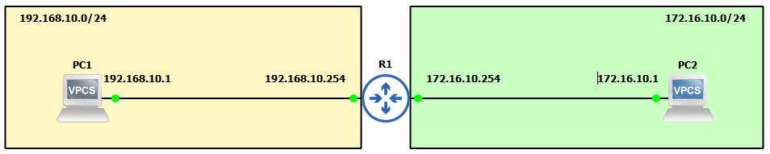
IP Schema
First, we need to decide on an IP addressing scheme. For this example, we will use /24 subnets on addresses 192.168.10.0 and 172.16.10.0. The host machines will be allocated the first usable address in these subnets, and the interfaces on the router will receive the last usable address.
IP Configuration
Initially, we will configure the IP addresses for the client machines:
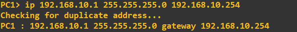
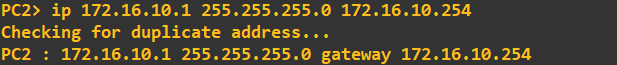
Next, we will configure the router interfaces:
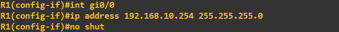
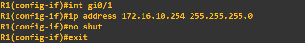
A quick ping check between the client machines, PC1 and PC2, displays the traffic. Note the IP addresses at this stage (no address translation is taking place):
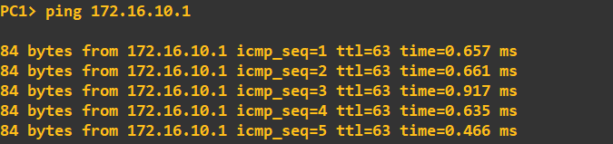
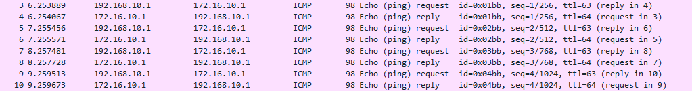
To clarify which line we are examining, it is highlighted in red:
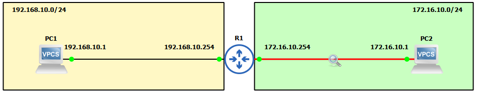
Configuring Dynamic NAT
Dynamic NAT allows us to use a POOL of available IP addresses in one subnet for translation. Static NAT translates one defined IP address to another defined IP address. Refer to our other guide for configuring static NAT.
Firstly, we configure our NAT zones. We need to inform the router about each interface:
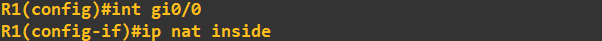
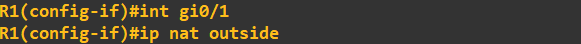
As we are configuring dynamic NAT, we need to create a POOL of free addresses in the 172.16.10.0/24 subnet for translating 192.168.10.0/24 traffic. The first address used in translation should be 172.16.10.50.
Next, we create an Access Control List (ACL) to help the router identify the traffic we want to NAT:
The final step is to apply (turn on NAT) by specifying the POOL name 'SR' and the ACL:
Let's verify by checking the IP addresses using Wireshark. Ideally, we shouldn't see any 192.168.10.x addresses:
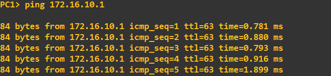
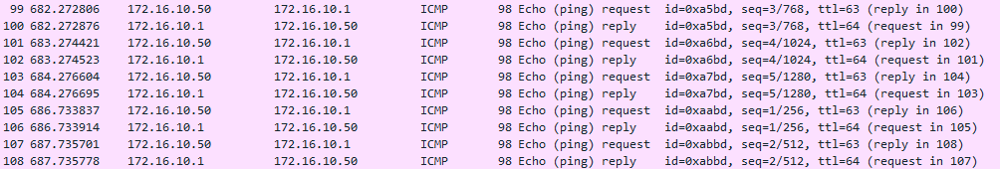
Our address translation is successful. The router's translation can be viewed as follows:
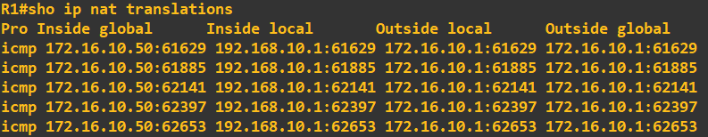